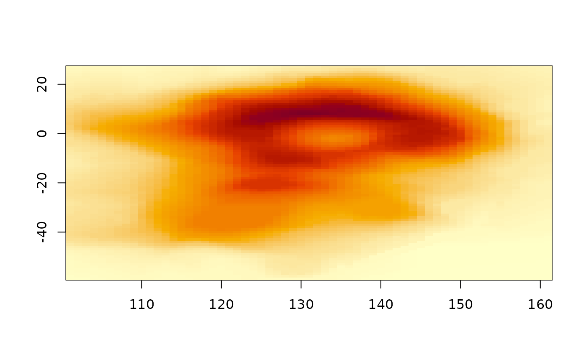

as_ximage() is the shared input decoder behind ximage(), xcontour(),
xtext() and xpanels(). It turns any supported input into a matrix (or
a colour array) in raster order, with its placement, and for arrays with
more than two dimensions it chooses the slice to draw.
Usage
as_ximage(
x,
extent = NULL,
...,
slice = NULL,
xy = NULL,
coords = NULL,
force = FALSE,
bands = TRUE,
verbose = getOption("ximage.verbose", TRUE)
)Arguments
- x
input data, anything
ximage()accepts- extent
optional, numeric xmin,xmax,ymin,ymax, overrides any placement from the input or from
coords- ...
arguments for methods
- slice
index of the slice to draw for arrays with more than two dimensions: a named list or vector, e.g.
list(time = 3, depth = 1), an unnamed value for the first non-spatial dimension, or one row ofxslices()output. Default is the first slice- xy
the two spatial dimensions, x then y, as names or positions
- coords
optional coordinates of the spatial dimensions,
list(x = , y = )of centres, edges, or curvilinear matrices (see Details)- force
proceed with a guessed dimension for very long bare vectors (see
ximage())- bands
allow a band-like dimension to be drawn as a colour composite, default
TRUE(xcontour()andxtext()useFALSE)- verbose
report the slice drawn and possible fill values, default
getOption("ximage.verbose", TRUE)
Value
a list of class "ximage_data" with
- data
the matrix (or nrow x ncol x bands array, nativeRaster, or colour matrix) in raster order
- extent
xmin, xmax, ymin, ymax
- corners
NULL, orlist(x, y)of (nrow + 1) x (ncol + 1) cell corner matrices for data that can't be placed by an extent- centres
NULL, orlist(x, y)of nrow x ncol cell centre matrices when they were given as coordinates (with corners)- dims
named dimension sizes of the input array
- xy
names of the x and y dimensions
- slice
named list of the indices drawn for the other dimensions
- labels
named character, the coordinate value of each slice index where known
Arrays and slices
An array with more than two dimensions (or two named dimensions) is drawn one 2D slice at a time. The two spatial dimensions are found in this order:
the
xyargument, dimension names or positions, x firstdimension names, from
names(dim(x))(aszaro::zaro_read()gives) ornames(dimnames(x))(aszaro::zaro_array()gives), or thegisattribute ofgdalraster::mdim_read()output, matched against common names ("x", "lon", "longitude", "nav_lon", "xi_rho", ...)position: the first two dimensions, as rows (y) then columns (x) for an R array, or as x then y for GDAL reader output
Every other dimension takes the index given by slice, or 1. A message
reports the slice drawn and how to ask for the others. Set
options(ximage.verbose = FALSE) to silence it. Selecting 3 or 4 indices
along one dimension draws them as an RGB(A) composite, e.g.
slice = list(band = c(4, 3, 2)). A dimension named like a band ("band",
"channel", "rgb", ...) with 3 or 4 entries is drawn as a composite by
default, and so is the third dimension of an unnamed 3D array with 2 to 4
entries (grey-alpha, RGB, RGBA, unchanged from earlier versions).
Only the selected slice is read, by [, so lazy arrays (such as
zaro::zaro_array() output) fetch just the chunks that slice needs.
Coordinates and orientation
The drawn slice is put in raster order: first row at the top. When the y coordinates are known and increase with the row index (most CF, NetCDF and Zarr data, latitude south to north), the rows are reversed so that north is up, and decreasing x coordinates reverse the columns.
Coordinates come from the input's metadata (the gis attribute of
gdalraster multidimensional reads, ndr coordinates and affine indexes) or
from the coords argument, list(x = , y = ):
a vector with one value per cell gives cell centres
a vector with one more value than cells gives cell edges (as CF bounds do)
matrices give curvilinear coordinates, cell centres (one per cell) or corners (one more in each direction), in the same layout as the data
Regularly spaced coordinates give an extent and the image is drawn with
graphics::rasterImage(). Irregular spacing, curvilinear coordinates and
rotated or sheared affine transforms are drawn cell by cell as quads (see
xmesh()). Corners are found from centres by averaging the four
neighbours and extrapolating at the edges (longitudes that wrap need to be
made continuous first).
Physical values: scale and offset in gdalraster multidimensional output
are applied. Values of magnitude 1e30 or more are reported as a likely
fill value, set them to NA (zaro::zaro_array(cf = TRUE) does this).
Examples
## an array (lat, lon, time) with time last, lat south to north
a <- array(rep(volcano[87:1, ], 3) * rep(1:3, each = length(volcano)),
c(lat = 87, lon = 61, time = 3))
d <- as_ximage(a, coords = list(x = 100 + 1:61, y = -60 + 1:87))
#> array (lat: 87, lon: 61, time: 3)
#> drawing lon (x) by lat (y) at time = 1
#> other slices: slice = list(time = <1..3>)
d$extent
#> [1] 100.5 161.5 -59.5 27.5
ximage(a, slice = list(time = 2), coords = list(x = 100 + 1:61, y = -60 + 1:87))

xslices(a)
#> time
#> 1 1
#> 2 2
#> 3 3